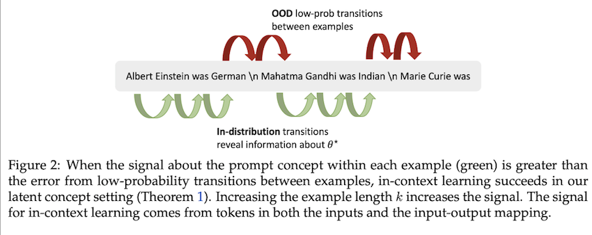
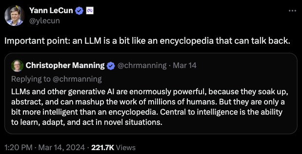

Prompting, the Wonderful Wizard (Part 1)
This is my first post about Large Language Models (LLMs), and given all the information available, it’s challenging to write something novel that won’t become outdated soon. I wanted to start with something “reasonably” simple: prompting. In hindsight, I’ll conclude my post by arguing that prompting is not simple. It is both underestimated and overestimated in different aspects. In this first part of the post, my goal is to answer the following questions:
- How it started?
- How has it evolved, and why is it important?
- How does it work?
- When does it not work?
Note: I’ll try not to overuse jargon and keep things simple.
How It Started?
“What is he like?” asked the girl.
“That is hard to tell,” said the man thoughtfully.
“You see, Oz is a Great Wizard, and can take on any form he wishes.
So that some say he looks like a bird;
and some say he looks like an elephant;
and some say he looks like a cat.
To others he appears as a beautiful fairy,
or a brownie, or in any other form that pleases him.
But who the real Oz is,
when he is in his own form,
no living person can tell.”
- The Wonderful Wizard of Oz
Reading the abstract of the GPT-3 paper1 (from 2020) now feels like reading a paper that was written decades ago, since everything seems so familiar and no longer new.
We demonstrate that scaling up language models greatly improves task-agnostic, few-shot performance, sometimes even becoming competitive with prior state-ofthe-art fine-tuning approaches. Specifically, we train GPT-3, an autoregressive language model with 175 billion parameters, 10x more than any previous nonsparse language model, and test its performance in the few-shot setting. For all tasks, GPT-3 is applied without any gradient updates or fine-tuning, with tasks and few-shot demonstrations specified purely via text interaction with the model. GPT-3 achieves strong performance on many NLP datasets, including translation, question-answering, and cloze tasks.1
Let’s highlight two key points from that paragraph:
-
- The scale of the model (175 billion parameters).
-
- The proposal of solving many tasks with no additional fine-tunning, instead only using few-shot demonstrations (i.e., in-context learning) on a frozen LLM.
the model is given a few demonstrations of the task at inference time as conditioning, but no weights are updated. An example typically has a context and a desired completion (for example an English sentence and the French translation), and few-shot works by giving K examples of context and completion, and then one final example of context, with the model expected to provide the completion. We typically set K in the range of 10 to 100, as this is how many examples can fit in the model’s context window (nctx = 2048). The main advantage of few-shot is a major reduction in the need for task-specific data.1
In-context learning
Example of in context-learning, source2
In simple terms, the input to the LLM needs some context and examples of the task to solve, all in natural language, and that’s it. If there are no examples, it’s called zero-shot. If there’s a single example, it’s called one-shot. You get the idea.
I remember when I learned about this concept of “prompting.” My initial reaction was disbelief at its power. After all, how could it be possible that just with some instructions and context it could solve complex tasks?
How Has It Evolved, and Why Is It Important?
Naturally, the big claims of GPT-3 were further tested by researchers. Two main questions were highly relevant:
- What tasks can in-context learning solve? (testing the limits)
- How does in-context learning work? (improving our understanding)
Regarding improving our understanding of in-context learning, a first attempt defined the emergent abilities of LLMs:
The ability to perform a task via few-shot prompting is emergent when a model has random performance until a certain scale, after which performance increases to well-above random.3
Emergent abilities would not have been directly predicted by extrapolating a scaling law (i.e. consistent performance improvements) from small-scale models. When visualized via a scaling curve (x-axis: model scale, y-axis: performance), emergent abilities show a clear pattern—performance is near-random until a certain critical threshold of scale is reached, after which performance increases to substantially above random. This qualitative change is also known as a phase transition—a dramatic change in overall behavior that would not have been foreseen by examining smaller-scale systems.3
So, again we see that scale plays a key role in the success of in-context learning.
Regarding testing the limits of in-context learning, the paper evaluated 10 abilities/tasks that LLMs were able to achieve, such as question answering, conceptual mapping, and simple arithmetic.
At this point, our understanding of prompting was (and perhaps still is) not very good. We know that some abilities emerge in these LLMs, and those are quite powerful because they can solve reasonably hard tasks. In-context learning seems quite simple, so researchers continued pushing with more elaborate prompts.
A notable proposal is the idea of multi-step reasoning, where a common example is the chain-of-thought prompting, as exemplified below: Example of in Chain of thought prompt, source4
The same paper studied 13 abilities that emerged with “augmented prompts.”
Emergent abilities of LLMs, source3
In summary, prompting has shown a broad range of applicability (many tasks) and flexibility (demonstrations vary from 1 to hundreds, it can adapt to different domains, it can be augmented, etc.).
Now, let’s try to answer the question, how?
How Does It Work?
Short answer: we don’t know yet.
Long answer: researchers have tried different ideas to understand in-context learning.
Idea #1 Functional Approach
Researchers have studied what kind of functions LLMs/transformers can learn.
- Example #1.1 Learning Linear Functions
The building blocks for two specific procedures—gradient descent on the least-squares objective and closed-form computation of its minimizer—are implementable by transformer networks. These constructions show that, in principle, fixed transformer parameterizations are expressive enough to simulate these learning algorithms.5
We showed that these models are capable in theory of implementing multiple linear regression algorithms, that they empirically implement this range of algorithms (transitioning between algorithms depending on model capacity and dataset noise), and finally that they can be probed for intermediate quantities computed by these algorithms.5
- Example #1.2 Learning Non-Linear Functions
In this work, we formalize and study the question: can we train models that learn different classes of functions in-context? We show that Transformer models trained from scratch can in-context learn the class of linear functions, with performance comparable to the optimal least squares estimator, even under distribution shifts. Moreover, we show that in-context learning is also possible for sparse linear functions, decision trees, and two-layer neural networks; learning problems which are solved in practice with involved iterative algorithms such as gradient descent.6
These findings suggest that Transformers can learn various classes of functions, not just linear, but also more complex ones like decision trees and two-layer neural networks.
Idea #2 In-Context Learning as a Known Learning Process
- Example #2.1 In-context learning as gradient descent.
This work is quite detailed and structured; it is hard to summarize, so I just decided to highlight one of the many experiments that they did.
How does ICL evolve during training? From the given constructions, models need to arrive at very specific weights to be able to perform gradient descent on in-context samples, but in practice, we observe models develop, retain, and improve this ability over time in training when the parameters change significantly.7
In context learning accuracy during training, source 7
This experiment evaluated the accuracy of in-context learning during training, showing that the ability is quite stable even though the parameters are not.
- Example #2.2 In-context learning as Bayesian inference
We cast in-context learning as implicit Bayesian inference, where the pretrained LM implicitly infers a concept when making a prediction. We show that in-context learning occurs when the pretraining distribution is a mixture of HMMs.8
 In context learning as Bayesian inference, source 8
At this point, we do not have a definite answer on how ICL works.
While recent work has shown that Transformers have the expressive capacity to simulate gradient-descent in their forward pass, this does not immediately imply that real-world models actually do simulate it.7
When Does It Not Work?
It’s safe to say that the general consensus is that LLMs are powerful and can solve diverse tasks in many domains.
We demonstrate that, beyond its mastery of language, GPT-4 can solve novel and difficult tasks that span mathematics, coding, vision, medicine, law, psychology and more, without needing any special prompting9.
Table of contents of “Sparks of Artificial General Intelligence: Early experiments with GPT-4” 9
However, prompting/LLMs have limitations. As the field has rapidly evolved, new research has shown how brittle LLMs can be in certain contexts and applications.
Example #1: Planning
We conduct a systematic study by generating a suite of instances on domains similar to the ones employed in the International Planning Competition.10
Our results show that even in simple common-sense planning domains where humans could easily come up with plans, LLMs like GPT-3 exhibit a dismal performance. Even though there is an uptick in the performance by the newer GPT-4 in the blocksworld domain, it still fails miserably on the mystery blocksworld domain, indicating their inability to reason in an abstract manner.10
But, you might be asking, what about those “augmented prompting” techniques? There are recent works that have shown not-so-good perfomance with chain-of-thought11, self-reflexivity12, and reasoning and acting (ReAct)13.
Chain-of-thought accuracy in planning tasks, source 13
While the preceding discussion establishes that LLMs are not capable of generating correct plans in autonomous mode, there is still the possibility that they can be useful in an LLM-Modulo mode as idea generators for other sound external planners, verifiers or even humans-in-the-loop.10
 LLM-Modulo, source 14
LLM-Modulo, source 14
If you are interested in this area, definitely check this recent talk: Can LLMs Reason & Plan?
Example #2: Compositional Tasks
Transformers today demonstrate undeniably powerful empirical results. Yet, our study suggests that they may have fundamental weaknesses in certain intellectual tasks that require true multi-step compositional operations such as multiplications and logic puzzles.15
The proofs presented show that, under reasonable assumptions, the probability of incorrect predictions converges exponentially to ≈ 1 for abstract compositional tasks. Importantly, these proofs apply to autoregressive LMs in general. Our insights indicate that the current configuration of transformers, with their reliance on a greedy process for predicting the next word, constrains their error recovery capability and impedes the development of a comprehensive global understanding of the task.15
LLMs (at least the ones we have now) are not the AGI that can be used indiscriminately in any application. It is not a plug-and-play technology. LLMs are useful, and there are many applications, but it is clear that understanding more about their limits will only improve their success.
To put it another way, the problem with Alchemy of yore is not that Chemistry is useless, but that people wanted to delude themselves that Chemistry –a pretty amazing discipline on its own merits– can be Nuclear Physics if you prompt it just so. The confusions regarding LLM abilities, or should we say, LLM alchemy, seems to be not that much different–oscillating between ignoring what they are good at, and ascribing them abilities they don’t have.14

Cite as:
Hernandez-Leal, Pablo. (June 2024). Prompting, the Wonderful Wizard (Part 1), pablohl.github.io, https://pablohl.github.io/posts/prompts/
@article{hernandezleal2024prompting,
title = "Prompting, the Wonderful Wizard (Part 1)",
author = "Hernandez-Leal, Pablo",
journal = "pablohl.github.io",
year = "2024",
month = "June",
url = "https://pablohl.github.io/posts/prompts/"
}
-
Brown, Tom, et al. “Language models are few-shot learners.” (2020) ↩︎
-
Dong, Qingxiu, et al. “A survey on in-context learning.” (2022). ↩︎
-
Wei, Jason, et al. “Emergent abilities of large language models.” (2022). ↩︎
-
Wei, Jason, et al. “Chain-of-thought prompting elicits reasoning in large language models.” (2022) ↩︎
-
Akyürek, Ekin, et al. “What learning algorithm is in-context learning? investigations with linear models.” (2022). ↩︎
-
Garg, Shivam, et al. “What can transformers learn in-context? a case study of simple function classes.” (2022) ↩︎
-
Shen, Lingfeng, Aayush Mishra, and Daniel Khashabi. “Do pretrained Transformers Really Learn In-context by Gradient Descent?.” (2023). ↩︎
-
Xie, Sang Michael, et al. “An explanation of in-context learning as implicit bayesian inference.” (2021). ↩︎
-
Bubeck et al. Sparks of Artificial General Intelligence: Early experiments with GPT-4 ↩︎
-
Valmeekam, Karthik, et al. “On the planning abilities of large language models-a critical investigation."(2023). ↩︎
-
Stechly, Kaya, Karthik Valmeekam, and Subbarao Kambhampati. “Chain of Thoughtlessness: An Analysis of CoT in Planning.” (2024). ↩︎
-
Stechly, Kaya, Karthik Valmeekam, and Subbarao Kambhampati. “On the Self-Verification Limitations of Large Language Models on Reasoning and Planning Tasks.” (2024). ↩︎
-
Verma, Mudit, Siddhant Bhambri, and Subbarao Kambhampati. “On the Brittle Foundations of ReAct Prompting for Agentic Large Language Models.” (2024). ↩︎
-
Kambhampati, Subbarao, et al. “LLMs Can’t Plan, But Can Help Planning in LLM-Modulo Frameworks.” (2024). ↩︎
-
Dziri, Nouha, et al. “Faith and fate: Limits of transformers on compositionality.” (2024). ↩︎